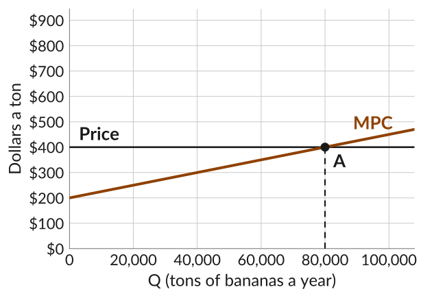
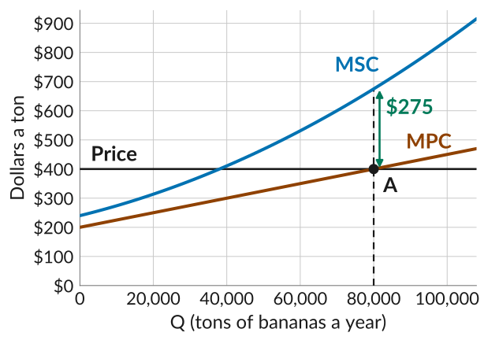
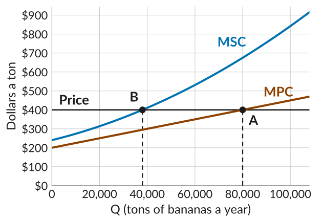
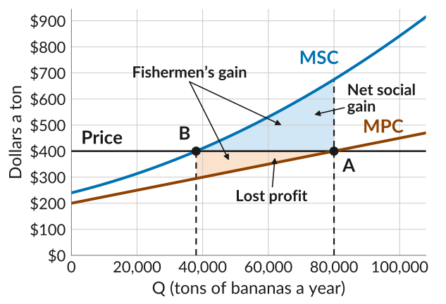
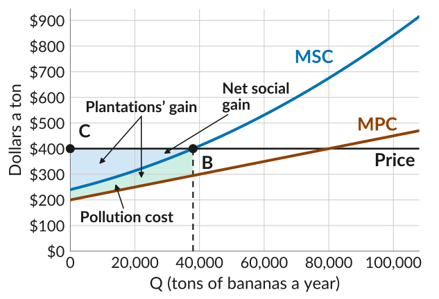

Bananas, Fish, and Cancer:
Private vs. Social Value Wedge
ECON 201: Principles of Microeconomics
Lecture 21
Bananas, Fish, and Cancer
- From 1972 to 1993, banana plantations on the French Caribbean islands of Guadeloupe and Martinique used the pesticide chlordecone.
- It was legal, and for the plantation owners it cut costs and raised profits.
- As the chemical washed off into rivers flowing to the coasts, fishing communities lost their livelihoods, and people eating contaminated fish fell ill.
- The US, knowing the neurological damage it caused, had already banned it in 1976. France waited until 1990, with an exemption for the plantations until 1993.
- In 2012, Martinique’s prostate cancer rate was the world’s highest, almost twice the next country’s, with a death rate over four times the world average.
Social and Private Costs and Benefits
The devastating damage from chlordecone is an example of an external effect of some economic decisions.
- An external effect or externality occurs when a person’s action confers a benefit or imposes a cost on others, which is not taken into account by the individual taking the action.
- The plantation owners considered their private costs and benefits: the cost of the pesticide against the extra bananas and revenue. For them, it was profitable.
- However, they ignored the external cost imposed on the local population in the form of lost livelihoods and ill health.
- The social cost, the private and external costs added together, was much higher than the benefit of the extra bananas.
Markets and Market Failure
- When a market is perfectly competitive and its trades affect only the buyers and sellers, the outcome is Pareto efficient.
- No one can be better off without someone else being worse off.
- Remember: firms produce where \(P = \text{MC}\).
- In that case, prices send the right messages about the costs of supplying the good and the benefits of consuming it.
- But if others are affected, prices will send the wrong messages.
- E.g. the price of fossil fuels leaves out the cost of global warming.
- Market failure occurs when the market outcome is not Pareto efficient.
- Prices fail to reflect true costs or benefits, or markets are missing.
A Banana Island
A hypothetical island grows bananas using a pesticide that kills fish. We assume bananas cannot be grown without it. The world price is $400 a ton.
- The island is a small seller, so it sells any amount at that price: demand is flat at \(P = 400\).
- Marginal private cost (MPC): growers’ cost of one more ton.
- Growers produce every ton that sells for more than it costs them, so they stop where \(P = \text{MPC}\): 80,000 tons.

The Cost to the Fishermen
- Marginal private cost (MPC): growers’ cost of one more ton.
- Marginal external cost (MEC): cost one more ton imposes on the fishermen.
- Marginal social cost (MSC): full cost of one more ton, \(\text{MPC} + \text{MEC}\).
![The same graph with the MSC curve added. MPC rises in a straight line from 200 dollars at zero tons to 400 dollars at 80,000 tons, where it meets the price line at point A. MSC starts above it, at 240 dollars, and curves upward more and more steeply, crossing the price line at 38,000 tons and reaching 675 dollars at 80,000 tons. The area between the MSC curve and the MPC line from zero to 80,000 tons is shaded green. At A, a vertical double-headed arrow from the price line up to the MSC curve is labelled 275 dollars.](img/banana-costs.svg)
The shaded area represents the total external cost, the MEC of every ton added up.
Is the outcome at A Pareto efficient?
Is the Private Outcome Pareto Efficient?
- To see whether A is Pareto efficient, imagine the plantations grew one ton less.
- The fishermen gain $275, the MEC of that ton.
- The plantations lose hardly anything: $400 less revenue, almost $400 less cost.
- So both groups could be better off with 79,999 tons, if the fishermen paid part of their $275 gain to the plantations.

So A is not Pareto efficient.
How Much Should Production Be Reduced?
- More generally, if output is reduced by one ton:
- The fishermen gain the MEC of that ton.
- The plantations lose the surplus they would have made from it, \(P - \text{MPC}\).
- Whenever \(\text{MEC} > P - \text{MPC}\), both groups can be better off, if the fishermen share their gain by making a payment to the plantations.
\[\text{Reduce output if } P < \text{MEC} + \text{MPC} = \text{MSC}\]
- The Pareto-efficient output is where \(P = \text{MSC}\). There, the most the fishermen would pay is not enough for the plantations to cut output further.
The Pareto-Efficient Output
- The price is what buyers are willing to pay for a ton: the marginal social benefit, MSB.
- So the Pareto-efficient output is at B, where \(\text{MSB} = \text{MSC}\).
- At B, one ton less saves the fishermen exactly what it costs the plantations, so nobody can gain without someone losing.

What If One Company Owned Both?
- Suppose one company owned both the plantations and the fishing boats.
- The lost fish would now be the company’s own loss, so its private cost of a ton would include the harm to the fisheries.
- It would grow 38,000 tons, the Pareto-efficient amount. The external effect is internalized.
- The external effect arises because the plantations and the fisheries have different owners, and the growers do not pay for the harm they cause.
When growers ignore the external cost, the outcome is a market failure: compared with the Pareto-efficient allocation, the pollutant is overused, and too many bananas are produced.
Private Bargaining
If the fishermen paid the plantation owners to produce fewer bananas, both would be better off. Does this suggest a remedy for market failure that might be implemented in the real world?
- The economist Ronald Coase said that as long as property rights are clearly established, the two sides can negotiate a private bargain. This is Coasean bargaining.
- Property rights are the legal protection of ownership. They can cover goods like clean water, and they can be bought and sold.
- Coase argued that the two sides often know more about the harm than the government does, so their bargain is more likely to reach a Pareto-efficient outcome.
Sturges v Bridgman
- Coase used the legal case of Sturges v Bridgman to illustrate how bargaining could work.
- Bridgman, a candy maker, had for many years been using machinery that generated noise and vibration.
- This caused no external effects until his neighbor Sturges, a doctor, built a consulting room on the boundary of his property, close to the candy maker’s kitchen.
- The courts granted the doctor an injunction that prevented Bridgman from using his machinery.
- The court’s role was to establish the initial property rights of the two parties: in this case Bridgman’s right to make noise or Sturges’s right to a quiet environment.
Coase’s Argument
Coase explained that once the court had given the property right to the doctor, the two sides could modify the outcome:
- The doctor would be willing to give up his right in return for a payment greater than the costs the noise imposed on him.
- The candy maker would be willing to pay if his gain from using the machinery exceeded the payment.
- So the machinery would be used only if its benefit was greater than the social cost.
- If the court had given the property right to the candy maker instead, the doctor could have paid him to stop, with the same result.
Either way, the result would be Pareto efficient.
If the Plantations Had the Right to Pollute
Suppose the legal framework gives the plantations a right to pollute.
- With no bargaining, the plantations produce at A.
- With sufficient funds, fishermen would pay them to move to B.
- Minimum the plantations accept: lost profit.
- Maximum the fishermen pay: fishermen’s gain.
- So the gap, the net social gain, is split by bargaining power.

If the Fishermen Had the Right to Clean Water
Now suppose the legal framework gives the fishermen a right to clean water.
- With no bargaining, no bananas are grown: point C.
- The plantations would be willing to pay to produce at B.
- Minimum the fishermen accept: pollution cost.
- Maximum the plantations pay: plantations’ gain.
- Again, the net social gain is split by bargaining power.

Efficiency and Equity
- Efficiency: bargaining reaches the Pareto-efficient output whoever holds the initial rights. It is 38,000 tons in both cases.
- Equity: bargaining power decides how the net social gain is split. But the initial allocation of property rights is also very important for determining the distribution of incomes, because it sets what each side has with no bargaining.
- Case 1, a right to pollute: the fishermen start with pollution, still suffer from it at B, and have to pay to stop it getting worse.
- Case 2, a right to clean water: they start with no pollution and are paid to allow some, a far better outcome.
Coase’s Idea in Practice
Coase’s idea: establish clear property rights, then let them be bought and sold.
- Clean water: in the 1990s, New York City agreed to pay upstate farmers and towns to keep pollution out of its reservoirs, instead of building a filtration plant.
- Pollution permits: in the 1990s, the US capped sulfur dioxide from power plants and gave them permits they could trade. California has done the same for carbon since 2013.
- Radio spectrum: Coase proposed in 1959 that the right to use each frequency be sold. The US has auctioned spectrum licenses since 1994.
- Fishing quotas: New Zealand limits the total catch and gives fishers shares of it that they can sell.
When Bargaining Fails
Transaction costs are the costs of reaching and enforcing a bargain.
- Unclear property rights: for years only DuPont knew how its chemical PFOA harmed local water, so there were no rights to bargain over.
- Impediments to collective action: there may be many parties on each side, all affected in different ways.
- Missing or asymmetric information: the costs and benefits of everyone involved have to be measured.
- Tradability and enforcement: the bargain trades property rights, and the contract must be enforceable.
- Limited funds: the buyer of a property right must be able to pay for it.
Next class: other solutions.
ECON 201 · Lecture 21